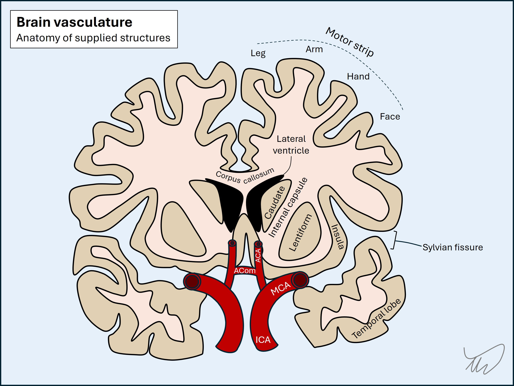
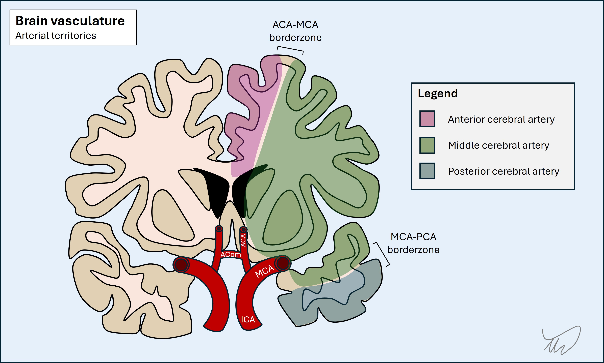
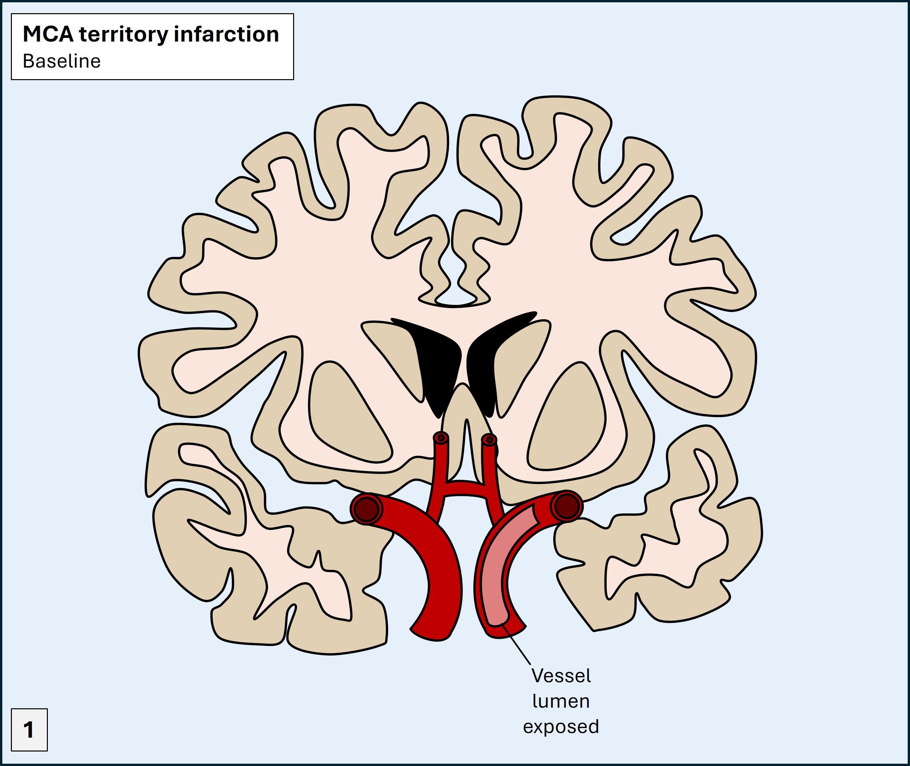
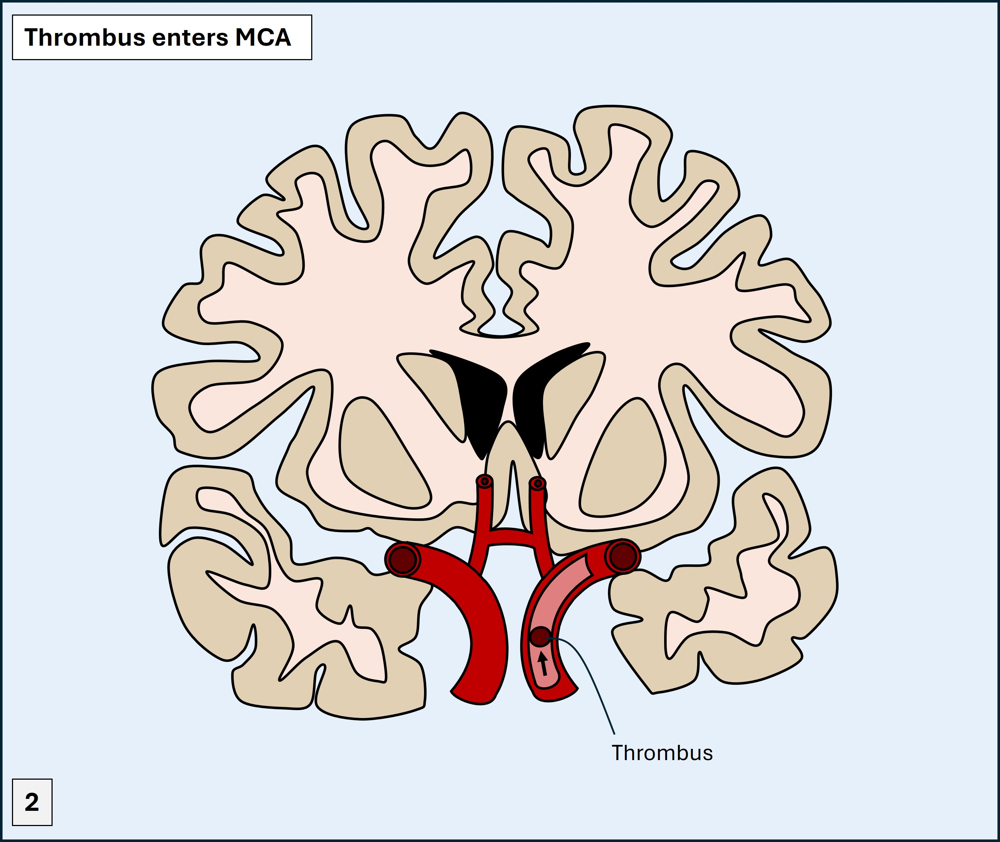
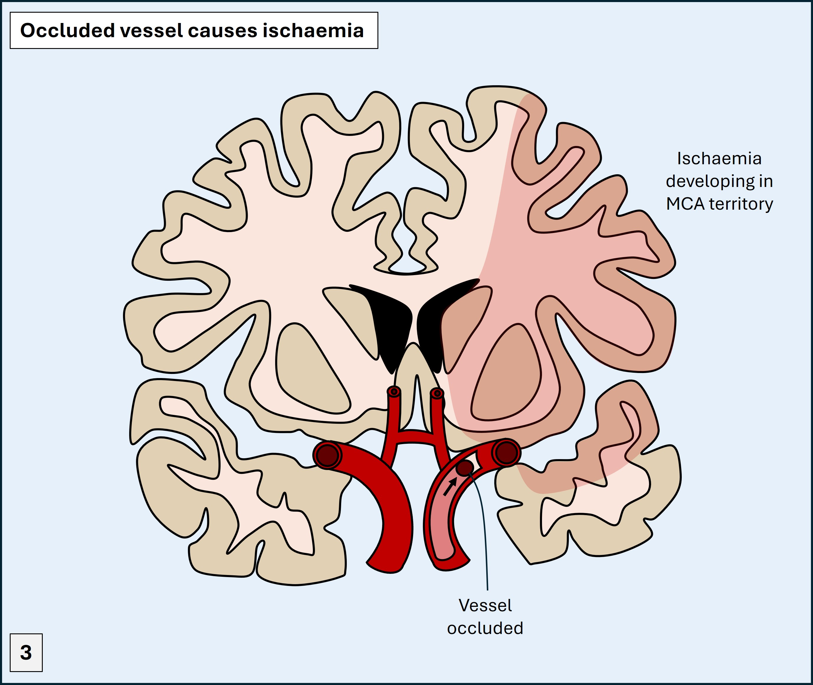
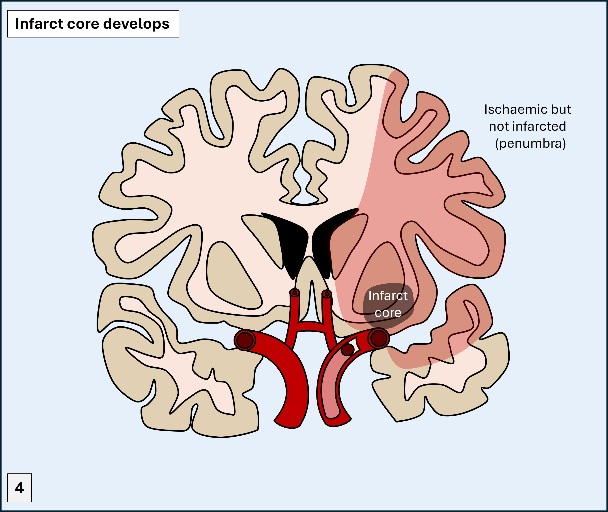
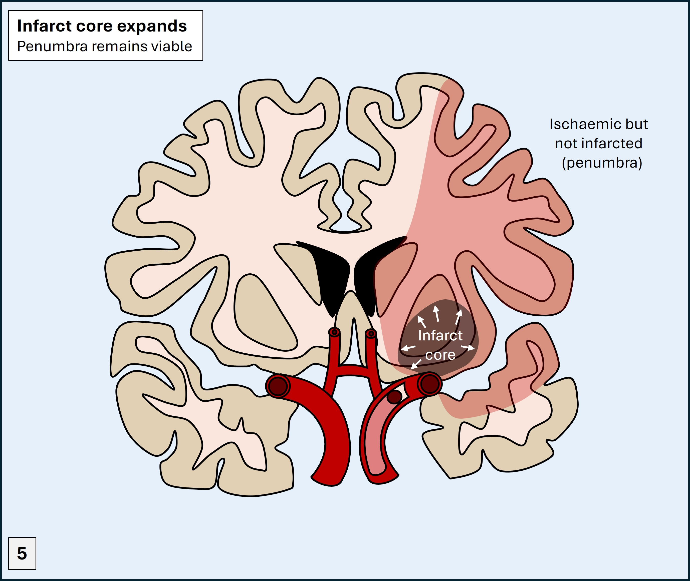

Case 1. Right-sided weakness and inability to speak
What is the lesion?
The onset of this was instant – mid-conversation. The neighbour arrived within minutes to check on her and found extensive lateralised features already present. They were probably there from the start – the patient can’t tell us.
The three chief causes of sudden-onset neurological problems are stroke, seizure and trauma. There is no suggestion of trauma here even though the onset was not ‘witnessed’ – the circumstances the neighbour found her in did not suggest any injury at least.
Seizures usually present with positive features – e.g. motor activity – though can leave post-ictal negative deficits (weakness, numbness) in their wake. Dysphasia can be both – i.e. an ictal or post-ictal phenomenon. Post-ictal paralysis (Todd’s palsy) is an important acute stroke mimic. We can’t say for certain that this patient didn’t have a seizure – but she was alert when the neighbour arrived, which would be unusual; most people are difficult to rouse after a seizure.
Stroke is the chief concern in any patient with abrupt-onset lateralised neurological deficits, and here seems extremely likely.
The deficits all localise to the left hemisphere, and are in the territory of the left middle cerebral artery (MCA). Even though there's hemiplegia and the 'leg' area of the cortex is supplied by the anterior cerebral artery (ACA), the descending tracts from that area pass through the subcortical zone besides the those from the arm and face, and then through the capsule. While small, distal branch MCA strokes may sometimes spare the leg, large ones paralyse it, even though they don't affect the relevant cortical area.


This combination of hemiplegia, dysphasia and hemianopia represents a left MCA total anterior circulation stroke (TACS), while the presence of only some of these features is referred to as a partial anterior circulation stroke (PACS).
It is very likely that this is what has happened. The patient also is at risk of this due to age, diabetes and high cholesterol.
If so, there is a lot to play for. If this is an ischaemic stroke, it likely reflects a large, proximal occlusion. What happens quickly is ischaemia develops - knocking out the affected areas, but without permanent damage occuring immediately. Infarction begins to develop in a core - with an area of viable brain surrounding it, which is ischaemic but not yet infarcted (the penumbra). The core expands in time unless interventions are performed.





She has presented within a favourable time window for reperfusion therapies – to chemically dissolve and mechanically retrieve the thrombus. These can dramatically improve the neurological outcome if done quickly enough.
Even if it is a haemorrhagic stroke, intensive supportive measures can help improve her outcomes, even if they don’t have the same potency as reperfusion therapy does.
And whichever it is, there’s a lot of disability that may need managing in the near and short-term, and a high risk of death.
For this reason, every acute hospital has a ‘code stroke’ pathway to ensure such patients get rapid investigations and treatment – because ‘time is brain’.
Other possiblitiesIt is very difficult to imagine this sudden-onset and severe presentation being due to anything else. Occasionally, large tumours present in a sudden-onset stroke-like fashion - whether due to haemorrhage or rapid build up of severe oedema - but this is less likely.
Clinical formulation